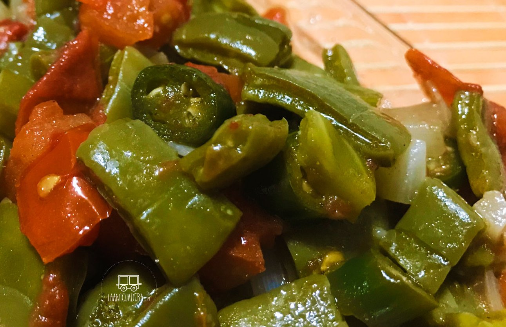

Seasoned Nopal

Description
This is a very tasty, easy to prepare, protein dish that you can make a part of your
family dinner to serve approximately four (4) persons.
Ingredients
- Two (2) medium-sized leaves of nopal
- Quarter (1/4) teaspoon Himalayan salt
- One (1) chopped onion
- One (1) diced tomato
- Two (2) minced medium-sized pegs of garlic
- Half (1/2) teaspoon of ground scotch-bonnet pepper
- Three-quarter (3/4) teaspoon coconut oil
Steps
- Wash leaves of nopal, remove any prickles and dice them into small rectangles.
- Cook diced nopals in 3/4 cups of water and salt for 5-10 min on low flame, then drain cooked nopal.
- Mix chopped onion, diced tomato, minced garlic and pepper with nopal and stir-fry mixture in oiled frying
pan for a few minutes.
- Serve with you dinner as you would any other protein.
Home